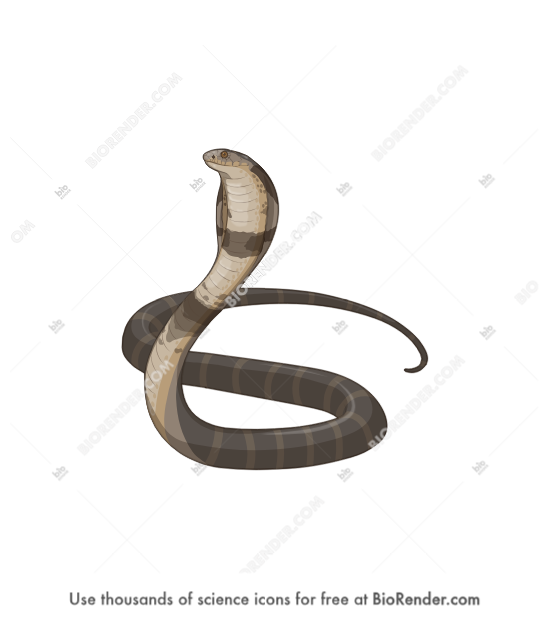
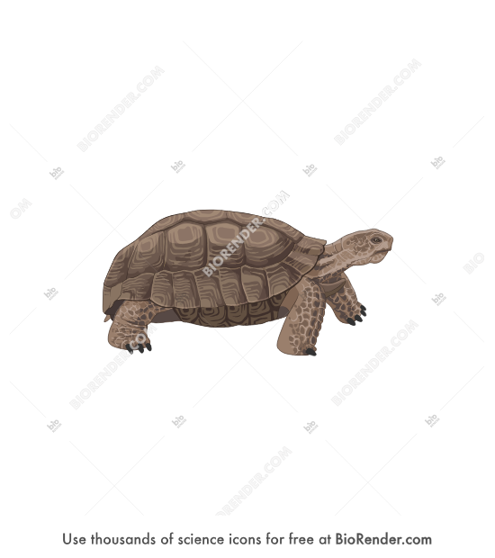

Water your plants when the soil feels dry to the touch. Most terrarium plants prefer consistently moist but not waterlogged soil. Water less frequently during winter months when growth slows down. Use room temperature water and avoid getting water on the leaves to prevent fungal issues.
Most terrarium plants thrive in bright, indirect light. Place your terrarium near a window where it receives filtered sunlight for 6-8 hours daily. Avoid direct sunlight as it can scorch the leaves and overheat the terrarium. If natural light is limited, consider using a grow light positioned 6-12 inches above the plants.
Use well-draining potting soil specifically designed for indoor plants or succulents. Ensure proper drainage by adding a layer of pebbles or gravel at the bottom of your terrarium to prevent water accumulation. Refresh the top layer of soil every 6-12 months to replenish nutrients and maintain healthy plant growth.
To descend your plants, gently remove them from the terrarium and trim any dead or yellowing leaves. Repot the plants in fresh soil and water them thoroughly before placing them back in the terrarium. This process helps rejuvenate the plants and promotes healthy growth.